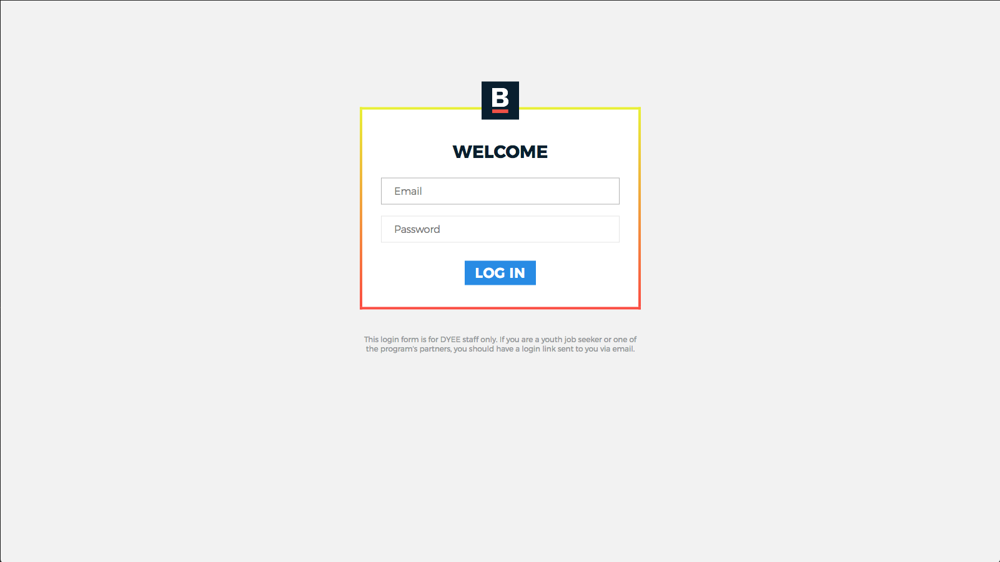
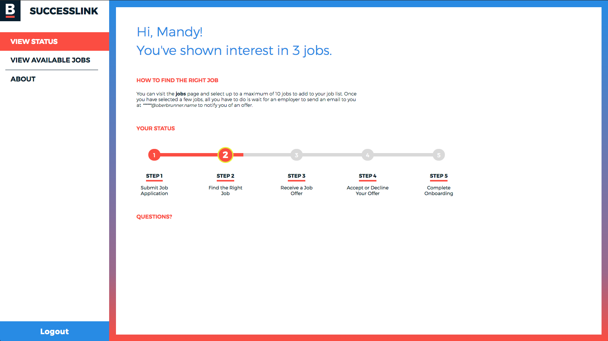
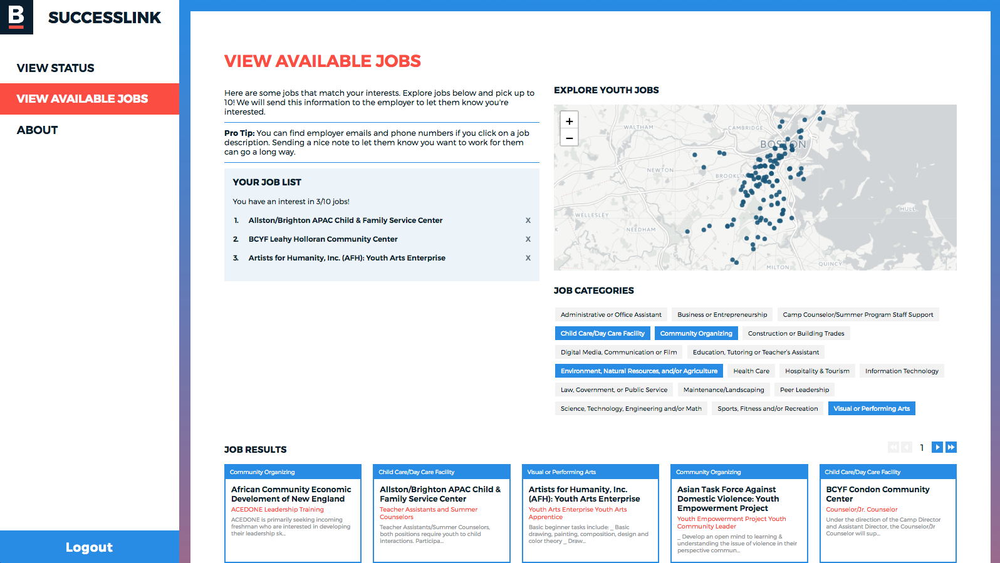
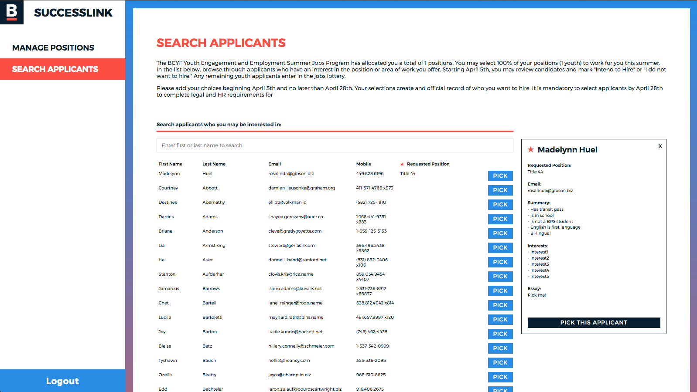
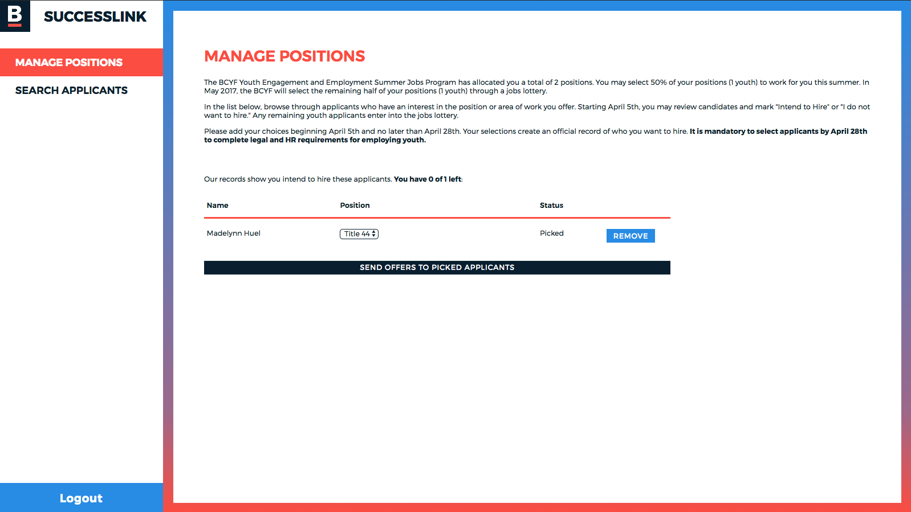
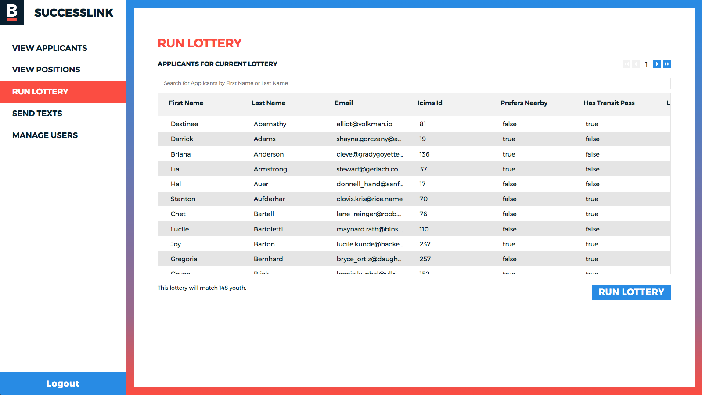
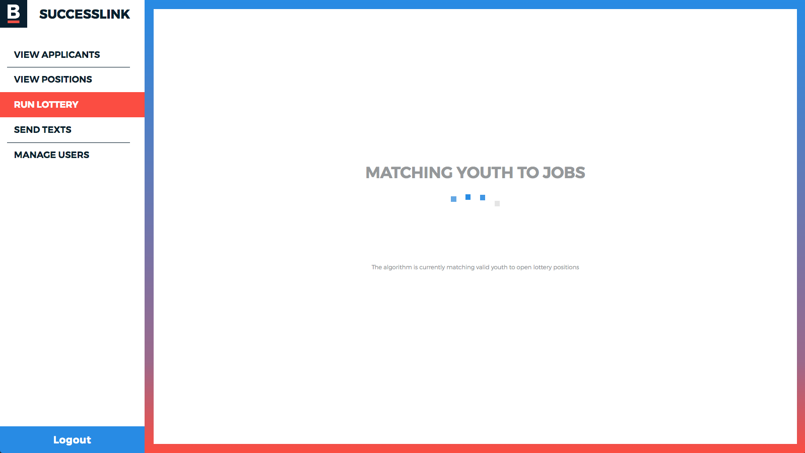
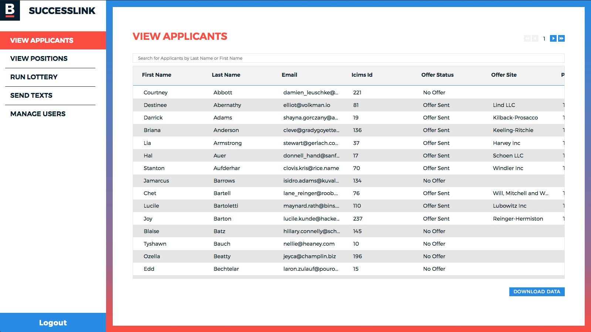

Youth Jobs Boston








In 2015, a team of government data and technology experts from MAPC and the City of Boston formed the Boston branch of the Civic Tech Data Collaborative (CTDC) to tackle the design of a more accessible youth employment system. After two years of cross-sector collaboration, the project is coming to a close with the release of an open source Youth Jobs Platform that has already had measurable impact on Boston’s youth employment experience.
Summer jobs provide a host of immediate benefits to youth: they help develop an understanding of financial management, offer real-world work experience, expose youth to positive adult role models, help build a resume and create networks for future employment opportunities. Researchers have also found a positive correlation between having a summer job and achieving much longer-term life outcomes that make a huge difference in life-long success: reduced incarceration rates and higher educational achievement.
The technical leads on the project, from Metropolitan Area Planning Council’s Digital Service Team, led the development of the Youth Jobs Platform. Initially the team sought to improve the matching process itself by redesigning the process behind a summer jobs lottery. They did so by adapting a highly effective matching algorithm called “Gale-Shapely” method which solves a classic economic problem called the stable marriage problem, which ensures a stable match (repeatable and reliable) between two equally sized sets of data (in this case jobs and youth applicants). Gale-Shapely was invented to address matching medical students to residency programs in hospitals across the country. In this case, the algorithm was used to better match youth to jobs that they wanted and could reach.
The Youth Jobs Platform was built through a partnership between the Metropolitan Area Planning Council (MAPC, Boston’s Regional Planning Agency), the City of Boston Division of Youth Engagement and Employment (DYEE) and Department Innovation & Technology (DoIT), local volunteer-based civic technologists (Code for Boston), the Boston Foundation, and faculty researchers at MIT.
The Civic Tech and Data Collaborative (CTDC) is a joint initiative of Living Cities, Code for America and the National Neighborhood Indicators Partnership, supported by a grant from the John D. and Catherine T. MacArthur Foundation. Locally in Boston, this project was generously supported by BNY Mellon..